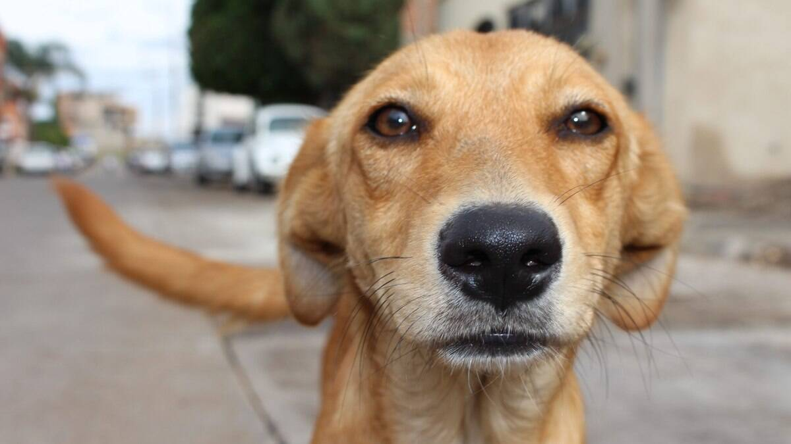

Como Cuidar
Alimentação
Ofereça ração adequada à idade e ao porte do cão e deixe sempre água limpa à disposição.
Escove os dentes só com pasta para cães.
- Filhotes comem várias vezes ao dia, em porções pequenas.
- Adultos costumam comer duas vezes ao dia.
- Alguns alimentos humanos fazem mal ao cães:
- Chocolate;
- Uva e uva-passa;
- Cebola e alho.
Passeios
Filhotes só passeiam com as vacinas em dia.
Passeios são importantes porque gastam energia, fortalece os músculos e ajuda o cão a conviver com outras pessoas e animais.
- Pegar a guia.
- Passear, de preferência fora dos horários mais quentes.
- Dar água ao voltar para casa.
Raças
- Beagle
- Poodle
- Vira-lata

- Filhote
- Cão com menos de um ano.

Passeios da semana
| Cachorro | Raça | Passeio |
|---|---|---|
| Rex | Poodle | 2 |